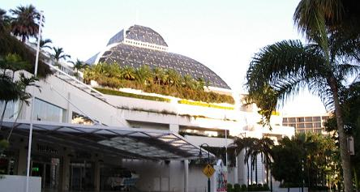
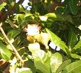
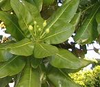

続きを見る
続きを見る

尾瀬へ行く前ですから五月の末頃だったと思います。
お風呂から出てくると、テレビ番組が私好みではなかったため、たまには新聞でも見ますか。。。と、夕刊に手を伸ばしてぺろぺろとページをめくっていくと、いきなり両眼から脳天へ突き抜けた数字の並んだ広告が。。。
「うん。。。？」
なに？なに。。。？
うっそぉ!!!（◎◎
兼ねてから行きたいと思ってチェックを欠かさなかったオーストラリア旅行が、信じられない金額で載っているではあーりませんか！
その金額、いつもの半額の3万9千800円也。
よくよく読んでみると、間際出発の「マギーくん」などという見出しがついており、出発日によっては申し込みと同時にキャンセル料が発生するというもので、内容としては機内食以外は食事なし自由行動ばかりの五日間ですが、それにしても安い！
ははぁ。。。
ツアーに空きが出ているものだな？。。。と、なんとなく納得ができましたが、私自身の予定も詰まっており、この上５日間も行ってくるなんていくらなんでも遊びすぎだしなぁ。。。と、諦めモード。
とはいうものの、誰ぞ一緒に行く相手があれば。。。という魂胆もどこかにあって、一応尾瀬旅行のときに話題にしてみましたが、行きたいのは山々なれど。。。と、みな同じような反応で、これでもう決定的に諦めることになりました。
「もしもし。。。」
旅行友達であるTさんと電話で話していると、
「９月にブラジルへ行くけど一緒に行かない？」
と誘われ、そりゃ行きたいには行きたいけど、２５万ものお金がかかるのならサンキュッパのオーストラリアの方が。。。
Tさんは２～３年前にケアンズへ行ってきたところだそうなので、まさか乗ってくるとは思ってもみませんでしたが、
「そんな値段なら。。。」
と、ぽん！と話に乗ってきて（やった！）、急遽話がまとまりました。（＾△＾；
オーストラリア航空は先着順で席が決まるとかで、通常の２時間前集合より３０分ほど早くから受付を開始すると言われており、２０時近い出発時間ということから、３時間前に空港で待ち合わせることになっていましたが、丁度間に合うようにネットで時間を調べておいたにもかかわらず、ほんのちょっと早めに家を出たばかりに予定より１台前のバスに乗ってしまい、地下鉄も、その次に乗る３０分に一本のバスも早まってしまい、空港に着いたのは約束の時間よりも１時間以上も早い時間（◎▽◎；
大きなスーツケースを持って空港内をうろつく気にもなれず、登りのエスカレーターが見えるところに座ってぼおーっとしていますと、若夫婦と親御さんらしきグループが隣の席へやって来て、
「アレは持ってきたか？」
「これは持ってきたか？」
と、若夫婦らしき二人が二つのスーツケースを広げて大騒ぎ。
今更忘れ物があるとわかったところで取りに帰るわけにもいかないだろうに。。。と、見るともなしに目をやっていましたが、広げたスーツケースの中身たるや、まるでそこいらへんにあったものをぽんぽんと放り込んだように、靴やら帽子やら衣類やらがあまりにも雑然として入っており、あれでは鞄の中で中身があっちへ行ったりこっちへ行ったりして遊んでしまうので、壊れ物は当然壊れるだろうなぁ。。。と思ってましたが、見も知らぬ私がどうこう言うまでもなく、お姑さんがぶちぶちと小言を言っておりました。
探し物はなんとか見つかったようですが、今度はスーツケースの鍵がないと、一旦閉じた二つのスーツケースをまたもや広げて、（あーあ、Ｔシャツも何もくしゃくしゃになって。。。）
あの時、ああでこうで。。。と、お嫁さんがハンドバッグ内をがさごそ探したり、婿さんはあちこちのポケットを探ったり。。。
見ない振りをしなければいけないんでしょうが、他人事ながらハラハラしてしまい、ついつい見てしまいます。
若夫婦はとうとう鍵を諦めてベルトだけでスーツケースを閉めており、あれでは口が開いて細かい物が飛び出してしまうだろうし、その前に荷物預かりとして断られてしまうのでは？と、またもや余計なことを心配したりしていましたが、一行は言い争いながら去って行き、その後どうなったのか知るよしもありません。（＾_＾；
束の間、退屈ということを忘れており、これはいい機会だからとしばし「人間ウォッチング」を楽しむことに決め、目の前を行き来する人々を見ているだけでもけっこう楽しめるものです。
それにしてもチョコマカと動き回って一時もじっとしていない幼児や、赤ちゃんを連れて若い夫婦が海外旅行に出かけるなんて、私たちが子育てをしていた頃には考えもしなかったことで、観光で出かける人ばかりではないのでしょうが、イマドキの若夫婦はリッチなんだなぁ。。。と、感心させられます。
カバンなどもさまざまな物があるもので、まるでワンちゃんでも連れて歩いているかのように紐で軽々と引いて行けるスーツケース。
ちょっと小型だけどあれは良さそう。。。
ポケットがいっぱいついているものや、付け足して大きくなりそうなものなど、布製の物はバリエーションが楽しめ鞄自体の重量が少ないので、持ち運びや出し入れの多い物などの収納には便利そうです。
そうこうするうちに、エスカレーターを上がってくるＴさんらしき後姿が見えましたが、後姿だけなので「らしい」というだけで、顔が見えるまでじっとその女性を目で追っていたのですが、エスカレーターから降りるとそのまま正面にある柱へ進み、いきなり座り込んだかと思うと、床の上でスーツケースを広げてなにやら探しものをしているようです。
一向に顔が見えないので近くまで行ってみますが、それでもまだはっきりとはわからず、声がかけられずにしばらくそばに立って様子を見ていました。
「あ！」
「やっぱりそうだった！」
誰かに見られているというのはなんとなく感じるもので、ふと顔を上げたＴさんと顔を合わせて、何か忘れ物でもしたのかと聞いてみますと、昼寝で寝過ごしたのだそうで、あまりにも急いでスーツケースに持ち物を詰め込んだので、忘れ物がないかどうか心配になって確認をしていたのだそうです。
これから海外へ行こうというのにお昼寝？
旅行慣れした人は違います。（＾-＾；
無事合流でき、まだ受付時間にはちょっと早かったのですが、受付カウンターが目の前にあるので聞くだけ聞いてみようと行ってみると、まだ案内表示もしていなかったのですがすぐに手続きができ、何でも聞いてみるものです。
何はともあれ身軽になろうということでスーツケースを預け、さてどうしましょう？となると、Ｔさんはお昼ご飯も食べてないそうで、そろそろ午後５時になろうかとする時間、お昼をちゃんと食べてきた私でも小腹が空いてきており、何か食べようということでレストランに入りました。
飛行機に乗れば早々に機内食が配られることになると思いながらも、まだ３時間以上もあることだから。。。と、ついついＴさんに誘われてトンカツなんてオーダーしてしまい、行ったことのない旅先の話を聞きながらぎりぎりまで時間を過ごしてしまい、あろうことかトンカツもライスもきれいに平らげておりました。（＾∧＾; ゴチソウサマデシタ
さて、オーストラリアはケアンズへこれから向かうわけですが、オーストラリアは四国に似たかたちをしており、ケアンズは四国の高松あたりにあります。
つい最近まで、日本と季節が逆になっていると思っていたのですが、ケアンズは比較的暖かいところで、Ｔさんが以前行ったのは６月の半ば頃だったそうですが、泳ぐこともできたということで水着も用意してきました。
飛行時間は約７時間で、ケアンズは日本時間より一時間早いので、早朝の４時頃到着ということになります。
名古屋空港を飛び立って、しばらくすると機内食が運ばれてきまして、二人で違う物をメインに選んでみましたが、私には苦手なスパイスが効いており、もしかしてこのスパイスの入った料理で五日間過ごすのか？と、ちょっと不安になりましたが、寝たのかどうかもわからず再び出された朝食はなんの抵抗もなく食べられました。
食事のたびに傷ひとつないプラスチックのコップが出てきますが、Ｔさんはこれを「どうせ捨てるのだから。。。」と、使い終わったものは鞄の中にしまいこみ、これが思いのほか役立って、これからは私も見習って持ち帰ろうと思いました。（勿論往きのものだけですが。。。）
現地時間で4時10分着ですから、日本時間では夜中の3時10分です。
それより一時間ほど前に起こされるのですから、いつもならばそんな時間にはまだ夢の中をさまよっている頃で、半分眠った状態で目の前に出てきたものを口に運んで、はっと気がついたらケアンズの空港に着いていたという感じです。（＾Δ＾；
食品の持ち込みチェックがかなり厳しいと聞いていたのですが、私はレトルトのおかゆと梅干を持っていたので正直にそれを申告しましたが、「Okayu」のひと言だけで
「あー はい! はい! はい!」
てな調子で軽くあしらわれ、
「U Umebosiも。。。」
と、付け足しながら出口方面へと放り出されました。
空港のBANKで毎度お決まりの額になっている三万円をオーストラリア＄に替え、ツアー名を書いた紙を掲げる各社の出迎えスタッフの中から自分たちのツアー名を探し、同じツアーの人が全員が揃ってみるとバス半分にも満たない人数でした。
ここでは大きなスーツケースなどはバスのトランクではなく、コンテナのような箱に積んで、他の車に牽引されて各ホテルへ届けられるようになっており、全員荷物だけ先にホテルへ届けてもらい、ツアー事務所のある他のホテルへ。。。
同じツアーでありながらも泊まるホテルは違うようで、それぞれに自分たちでチェックインをするようになっており、その説明などをする部屋でオプショナルの仮申し込みをすることができるようになっていたので、当日参加のパロネラパークというものを申し込んでおきました。
このパロネラパークというのは、「天空の城ラピュタ」のモデルになったといわれる古城で、世界遺産に指定されている熱帯雨林に隣接しており、夕食のあと夜の熱帯雨林散策もできるそうなので、とりあえず一日目の夕食は心配しなくても良くなりましたが、出発は１４時３０分しかないとのこと。
９時３０分に開けられるツアー事務所でオプショナル代金を払わなければならず、宿泊ホテルのチェックインが２時からということだったので、ひとまず事務所の開店待ちです。
それにしても、４時１０分に到着して、もろもろの手続きや移動などで１時間半くらいはかかったとしても、９時３０分まではまだまだ時間がありあまり、眠そうなＴさんをホテルに残して近くを探検してみようと先ずはホテル内をうろうろ。
朝だけ食事ができるというレストランの前にまだ扉を閉ざしたツアー事務所があり、その向こうにはカジノがあるそうで、どこに入り口があるのかは行く気もないので探そうともしませんでしたが、広いフロアーの真ん中にピッカピカの車が置いてあり、ロープで囲まれた中でゆっくりと回転しています。
カジノのことはよくわかりませんが、どうやらその車が賞品になっているようで、こんな物が当たっても持って帰れないしなぁ。。。と、カジノの「カ」の字もする気のない私には関係のない代物なんですが、一応思うだけは無料ですから。。。
その車のあるフロアーから外に出てみますと、大きな葉の街路樹がきれいな並木道になっており、向かいにあるホテルも振り返って見るカジノのホテルも、環境保護のためか屋根に当たる部分に木や花が植えてあり、緑の街という景観です。

並木道をぶらぶらと歩いていくと、向かいのホテルの端っこに出たようで急に視界が開け、右手奥に港が見えてきたのでそちらへ向かってぶらぶら。。。
バリアリーフクルーズなどに行く船がそこから出ているようで、大きなショッピングセンターもあるようですが、時間が早いのでシャッターが閉まっており、時間があるときに来てみようと思いながら同じ道を引き返しました。
ホテルの敷地に沿って今度は反対の方角へ歩いて行くと、先ほどの道と同じ木が同じように歩道の端に植えてあるのですが、その下にピンク色の花のようなものが落ちており、側によって見てみるとちょっと変わった花です。


朝日が当たってしまってわかりづらいかもしれませんが、左が咲いている花で右がつぼみです。
白い小さな花びらがあるのですが、まるでそれが額のように広がっていて、花芯のような物が７～８センチくらいの長さで、大きなねむの木の花のようになっており、花から出ている下の方は真っ白なんですが、先っぽだけがピンク色になっているのです。
拾ってしげしげと眺めてみたのですが、このねむの木の花のように見えているところがシベ（雌しべ、雄しべのシベです）のようでした。
ホテルに帰ってゆったりした椅子に座り込み、ガイドブックの地図を見ると、先に行った港への道を通り過ぎて、まっすぐに行けば宿泊予定のホテルに行けるようで、歩いてでも行けそうな距離です。
そうこうしている間にツアー事務所が開く時間となり、１４５＄（日帰り観光にしてはちょっと高め）を現金で払ってしまうと後が困るのでこれはカードで支払い、１４時３０分までは自由の身です。
前もってガイドブックで調べておいたお勧めの飲茶の店を探しておこうということになり、回転する車の飾ってある出口から外へ出て、先ほどの並木道をカジノ沿いに歩いて、港とは反対の方向へ曲がると、サンタンカのような花が植えられた公園になっており、その通りの向こう側に渡って直進すればその店に行けるはずです。
「Cafe China」というのが店の名前で、横切ってきた道の数では間違いはないはずですがそれらしき店が見当たりません。
Ｔさんはミントの入ったチョコレートが好きなのだそうで、ミントとチョコレートって合わないような気がするけど。。。と思っていると、あまりないのだということで、あちこちの店を探して歩くそうです。
その時も目の前にあったコンビニへ入ってチョコレート売場を物色していたようですが、私は５色の細かいラメをみつけ、近頃おしゃれ心の芽生えてきた姪へマニキュアのアクセントに、思わぬところでお土産をゲットしてしまい、Ｔさんは棒チョコなれどミント入りをみつけほくほく。
で、二人してるんるん気分で店を出て来ましたが、 ちょっと待て！
私たちはチョコレートを探していたのでも、お土産を探していたのでもないぞよ。
カフェ・チャイナを探さなくては。。。。。
コンビニで聞けばよかったんでないの？
ということで再びコンビニへ入り、英語しか話さないおひげのお兄さんに店の名を告げると、店の外へ私たちを伴って出たかと思うと、あろうことか
隣の店を指差すではありませんか。
なんで「食天通」なんて看板が出ているんじゃあ！？
お兄さんにお礼を言って、シャッターの降りている店を見ながら
「今日は休みなんだろうか。。。？」
と、顔を見合わせてがっかり！
朝が早かったのでそろそろお腹が空いてきている私たち、暗黙のうちにそこで昼食を。。。とお腹が期待していたようで、食べるところがないとなると余計に空腹感が募り、どうしませう？
後で考えてみれば、夜明け前から朝食を食べている私たちにはそろそろ次の食事タイムかもしれませんが、１０時そこそこの時間帯に街中のレストランが開店しているはずもなく、二人がそれに気がついたのは三日後になってからでした。（＾-＾；
またもや同じコンビニに入りまして、（さすがに三度目は恥ずかしくてこそこそと入って行きました）こそこそとサンドウィッチを選び、飲み物や果物と一緒に小さなカゴに入れて、こそこそと店を出。。。。いやいや、いくら恥ずかしいからと言ってそこまではしませんが、なんとかその日の昼食を調達しました。
作成:2004-11-16
続きを見る